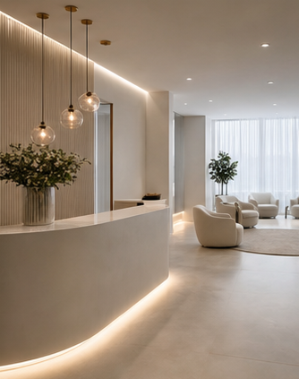
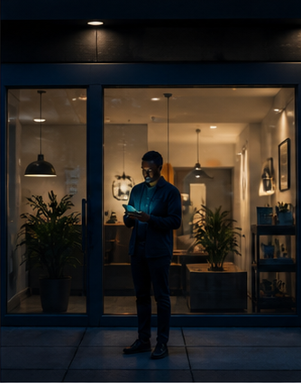

Open each site like a potential client would.
Each example has a fake business name, industry-native copy, motion, real imagery, and a working conversion interaction.
Kanso House
Minimal premium furniture ecommerce with styling appointments.

BoltWorks
Bold contractor website with instant quotes and callout booking.
Ember No. 18
Moody restaurant site with deposits, private dining and collection.

Luma Atelier
Soft luxury wellness site with treatment booking and membership.

NightSwitch
Kinetic lead-capture product site for after-hours enquiries.